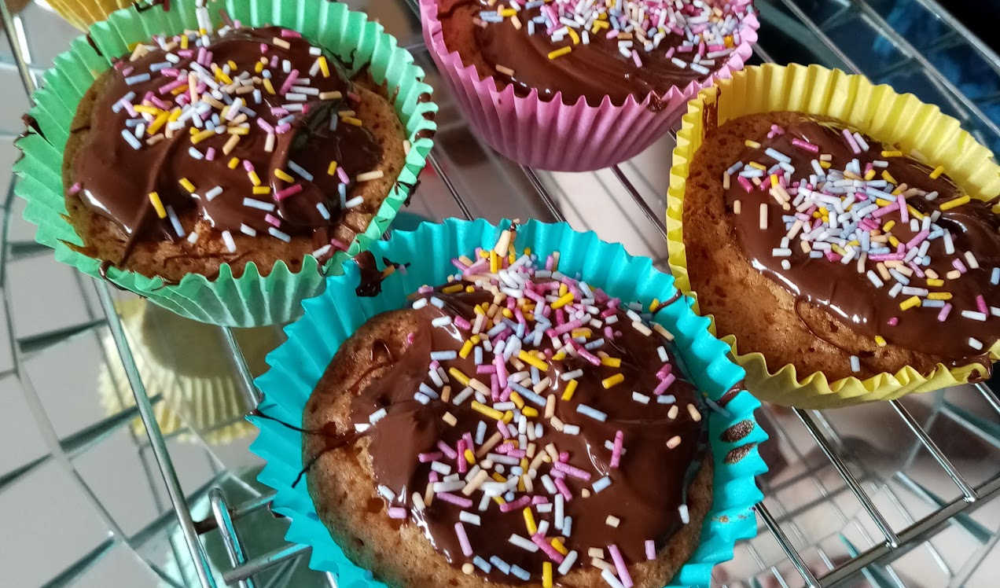

Fairy Cakes
 Vegetarian/Vegan
Vegetarian/Vegan
Simple cakes for kids

100gcaster sugar100gvery soft butter100gself-raising flour2eggs1 tspvanilla extract
turn the oven on to 180C/160C fan/gas 4. Put a paper case in each bun hole.
Put the sugar and butter (it must be soft or you won’t be able to mix it properly) in a bowl and mix it together. Sift in the flour.
Break the eggs in and add the vanilla. Beat everything together well till the mixture is light coloured and creamy.
Divide between the cases using a spoon, scraping it off with a knife. Ask a grown-up helper to put the tray in the oven for 20 minutes.